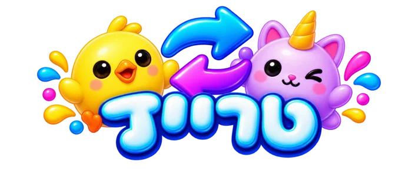
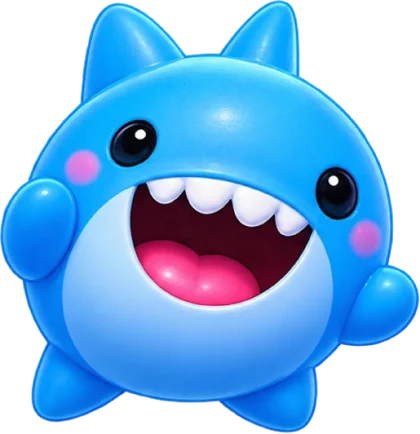

5 משחקים לשני שחקנים. בכל משחק האפליקציה מובילה: סופרת, מגרילה, משמיעה את האות ושומרת על הניקוד.
מהירותריכוז
מי יחטוף ראשון את הסקווישי מהג'קפוט? רק כשהצליל נשמע!
איך משחקים
- בוחרים סוג משחק: על נקודות (עד כמה נקודות משחקים) או על סקווישים — המנצח לוקח את הסקווישי.
- מניחים סקווישי על הג'קפוט במרכז הלוח, וכל שחקן שם את הידיים על הסימונים בצד שלו.
- לוחצים "מוכנים!" — ספירה לאחור, ואז שעון מתקתק. זמן ההמתנה אקראי, אז אין אפשרות לנחש.
- כשנשמע צליל הסנאפ — חוטפים! מי שחטף ראשון מקבל נקודה.
- מי שהרים יד לפני הצליל — היריב מקבל את הנקודה.
פרו מוד
מוסיף צלילים מטעים בזמן ההמתנה. חוטפים רק בצליל הסנאפ האמיתי!


החלפותהוגנות
החלפת סקווישים בלי ויכוחים — האפליקציה מגרילה מי מחליף עם מי.
איך משחקים
- בוחרים כמה סקווישים כל אחד מציע (1–5), ומניחים אותם על העיגולים המסומנים.
- לוחצים "טרייד!" — האפליקציה מראה החלפה אחת בכל פעם: שני עיגולים מהבהבים והסקווישים "עפים" זה למקום של זה.
- מחליפים על הלוח ולוחצים "החלפנו!" — עד שכל ההחלפות בוצעו.
לייב טרייד
למשא ומתן חופשי: מניחים את הטלפון בין השחקנים, ולוחצים ✓ עסקה, ✕ לא, או + תוסיף עוד.
זיכרוןמהירות
תסתכל טוב — יש לך רק 5 שניות!
איך משחקים
- בוחרים עד כמה נקודות משחקים, והגלגל מגריל מי מפענח ראשון.
- המפענח מסתובב. השחקן השני מסדר סקווישים על העיגולים ומצלם את השורה.
- המפענח מסתכל על הסידור 5 שניות בלבד, ומסתובב שוב.
- השחקן השני מערבב — ולמפענח יש 15 שניות להחזיר את הסדר הנכון.
- משווים לתמונה: סדר נכון — נקודה! ואז מתחלפים בתפקידים.
אומץתגובה
הפתיל בוער… אצל מי הסקווישי יהיה כשהפצצה תתפוצץ?
איך משחקים
- בוחרים מה עושים לפני כל העברה: לחיצה אחת, הקפצה, או עצירה על הג'קפוט.
- בוחרים כמה פיצוצים עד להפסד, ולוחצים "הפעל טיימר".
- מעבירים את הסקווישי מצד לצד בזמן שהפתיל בוער. זמן הפיצוץ אקראי!
- BOOM! — לוחצים על מי שהסקווישי היה אצלו, והיריב מקבל נקודה.
דיוקחשבון
קולעים סקווישים למטרה ויורדים בנקודות — עד בדיוק 0!
איך משחקים
- בוחרים עם כמה נקודות מתחילים (למשל 200), והגלגל מגריל מי ראשון.
- מניחים את הטלפון לרוחב על השולחן. בכל תור זורקים סקווישי על המטרה.
- לוחצים באפליקציה איפה הוא נחת: 10, 20, 50 או ג'קפוט 100 — והנקודות יורדות. מחוץ למטרה = החטאה.
- חייבים להגיע בדיוק ל־0. פגיעה שתוריד מתחת לאפס לא נספרת.